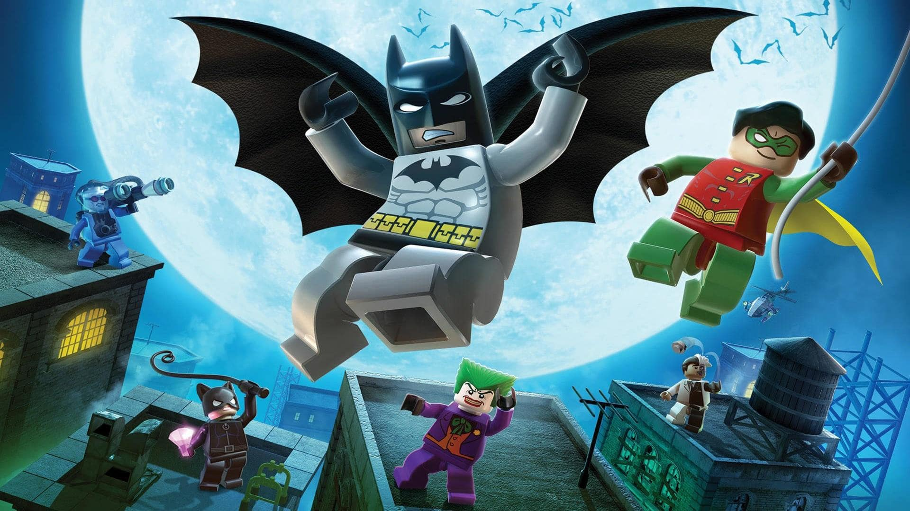

História
Como tudo começou
Os jogos de LEGO ficaram famosos por transformar filmes e historias em aventuras mais leves. Eles usam personagens simples e uma forma de jogar que agrada uma grande diversidade de idades!
Detalhes importantes
Em muitos titulos, o jogador precisa explorar cenarios, resolver pequenos desafios e coletar diversas relíquias diferentes, como redbricks (blocos vermelhos que desbloqueam extras), gold bricks (blocos dourados que desbloqueiam conteúdos especiais, como personagens e níveis), studs (que são os pequenos blocos redondos agem como a moeda do jogo) e, por último e não menos importante, os minikits (conjuntos de peças especiais com um design único por universo e que desbloqueiam montagens únicas). Isso deixa o jogo interessante sem ficar complicado, fazendo o efeito replay valer a pena para quem gosta de completar tudo.
